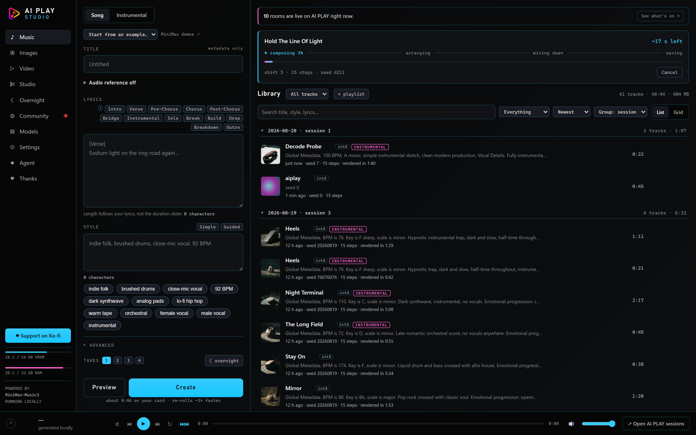
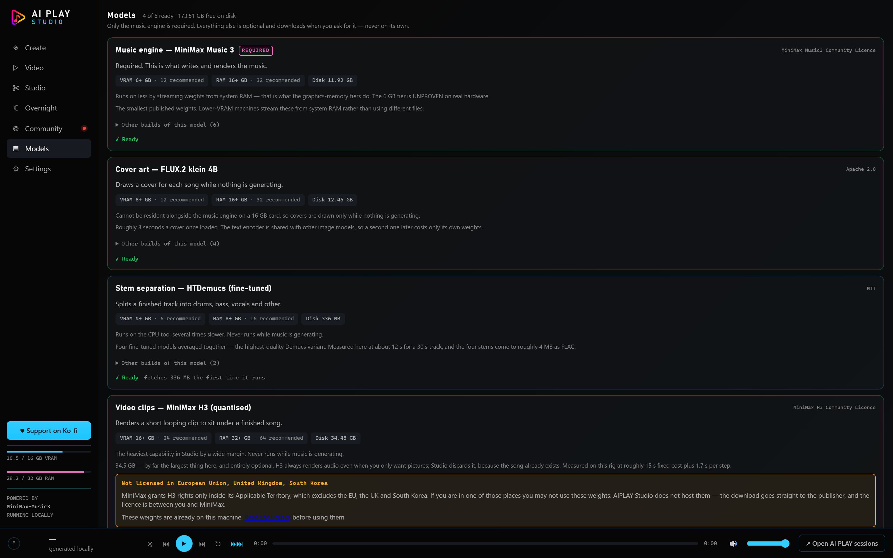
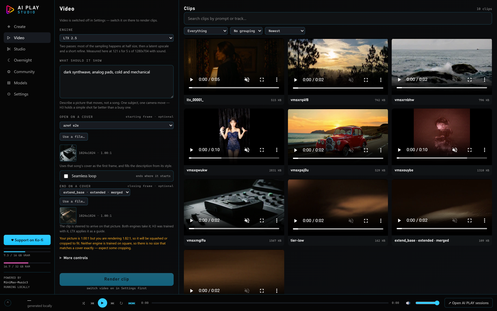
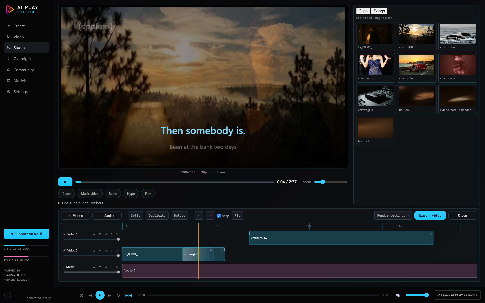
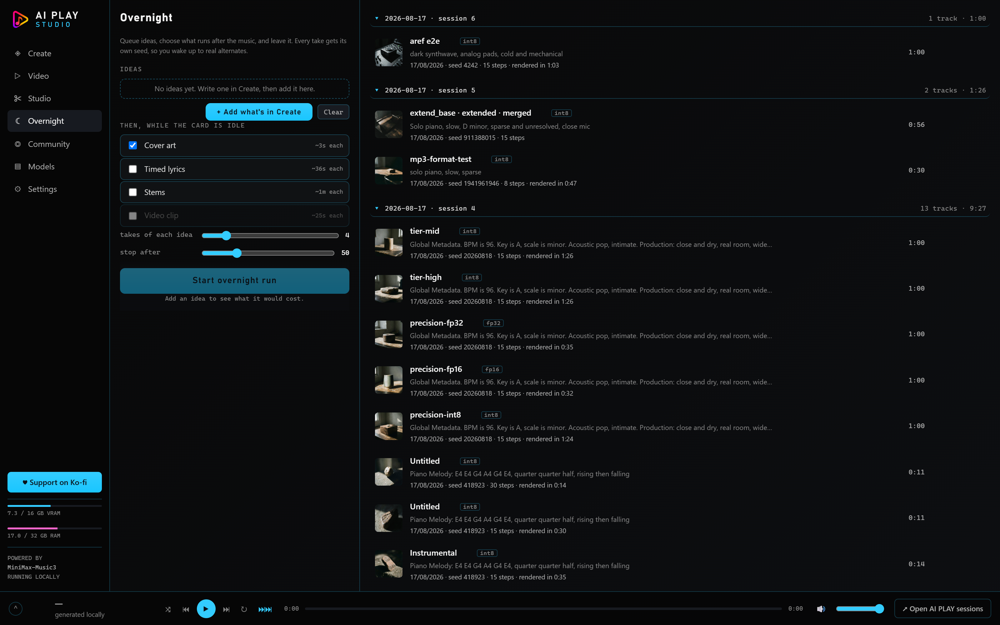

Write a style description and some lyrics. Get a song. No account, no upload, no credits, no per-song cost — nothing leaves the building. No suitable GPU? There is a hosted mode, off by default.
Everything below was made locally on one 16 GB card. Judge it before you read a word of how it works.
One window, six things, and a rule that keeps them out of each other's way.
Full songs from a caption and lyrics, or instrumentals from a structure. Re-roll the mix in about 15 seconds.
Continue a take, branch it, then flatten the whole chain into one song.
Feed it a recording and vary it. The interesting one — see below.
Drawn automatically while the card is otherwise idle, then embedded in the file.
Four-way separation, and word-level .lrc for karaoke and visualisers.
Clips under a track, then a timeline to cut them together.

This matters more than the feature list, so it goes first.
AIPLAY Studio contains no model weights and redistributes none. Not one byte.
Every capability declares what it needs — in server/models.js, which you can read —
and downloads it from the publisher, at your request, on your machine.
Before anything downloads, the Models screen shows you the real byte count, the licence, and whether your card can run it. Then there is one button.
| Capability | Download | Licence |
|---|---|---|
| Music — MiniMax Music 3 | 11.9 GB | MiniMax Music3 Community |
| Cover art — FLUX.2 klein 4B | 12.5 GB | Apache-2.0 |
| Stem separation — HTDemucs | 336 MB | MIT |
| Timed lyrics — Whisper large-v3 | 3.1 GB | MIT |
| Video — MiniMax H3 | 34.5 GB | H3 Community ⚠ excludes the EU, UK and South Korea |
| Video — LTX 2.5 | 39.7 GB | LTX-2.x Community ⚠ paid above $10M revenue; gated repo |

Everything Studio does, it does by submitting a graph to ComfyUI over its HTTP API. Not linked, not bundled, not modified. ComfyUI is GPL-3.0 and a separate program, running as its own process, exactly as its authors shipped it.
You install ComfyUI yourself. That is a real cost and I am not going to pretend otherwise.
The upside is that the graphs are the product. The pipelines Studio actually
submits are in workflows/ as ordinary ComfyUI JSON, exported straight from the code
that builds them. Drag one onto the canvas and every value is right there — and those values are
not ComfyUI's defaults. They were arrived at by measurement, and the measurement scripts ship in
scripts/.
A zip and a launcher. Three steps, and the third one is a double-click.
Start AIPLAY Studio.cmd.On first run it fetches exactly one npm package (ws, MIT — that is the entire
dependency list), finds your ComfyUI, and opens your browser at 127.0.0.1:4173.
.exe, on purpose. Open it in
Notepad and read exactly what it is about to do before you let it do it.You do not need to set up PyTorch or CUDA yourself — ComfyUI's portable build brings its own. One caveat worth knowing: install the cu130 build. A cu128 build runs, and runs about 4.9× slower, with nothing on screen to explain why. Studio checks at startup and says so rather than letting you wonder.
Full walkthrough, including the handful of things that actually go wrong on a first run, is in INSTALL.md.
Music and video are completely different questions, so here are two answers. Everything was measured on an RTX 4070 Ti SUPER (16 GB), 32 GB RAM, Windows 11.
| GPU | NVIDIA, 6 GB min · 12 GB recommended |
| RAM | 16 GB min · 32 GB recommended |
| Disk | 12 GB |
There is no CPU fallback. The first stage requires CUDA. AMD, Intel and Apple graphics will not run this, and macOS is out for that reason rather than a packaging one.
| GPU | 16 GB VRAM minimum — either engine |
| RAM | 32 GB minimum |
| Disk | 34.5 GB (H3) or 39.7 GB (LTX) |
Video and cover art are never resident alongside the music engine on a 16 GB card. That is exactly why they wait for idle time instead of fighting for it.
| Task | On the 16 GB card |
|---|---|
| Engine cold start | ~15 s |
| A fresh song | 39 s of audio in 65 s — 1.66× realtime |
| A full-length render | 135 s of audio in ~207 s — ~1.5× realtime |
| Re-rolling the mix | 50 s → 15 s |
| A cover | ~3 s |
| Stems, 30 s track | ~12 s |
| A 5 s clip — LTX 2.5, 1280×704 | 121 s |
| The same clip — H3, 1344×768 | 308 s at 8 steps · 660 s at 20 |
Same model, someone else's hardware, your API key. Off by default.
The numbers above rule out most laptops. But the library, cover art, timed lyrics, the studio timeline and overnight batching have nothing to do with a GPU — and that is the majority of the app. API mode runs the music on a hosted MiniMax Music 3 so all of it works on a machine that could never load the model, and switching to a local GPU later is a setting rather than a migration. Same library, same files.
Studio calls the provider directly from your machine. Nothing is proxied through AI PLAY, so the account and the transaction are yours and there is no middle for keys to pool in.
Your key is stored with Windows DPAPI, tied to your Windows
account and that machine — a copied settings file is inert anywhere else. It
is write-only across Studio's own interface: the browser is told a key
exists, how it is protected and its last four characters, never the key. On
platforms without DPAPI it falls back to a 0600 file and says so,
because file permissions are not encryption.
Studio's pipelines are tuned, and that tuning is most of what it knows — but
they are opinionated: one image model, two video engines, a fixed sampler. If
you already live in ComfyUI, drop an API-format graph into
workflows/custom/ and pick it in Settings. Studio fills in a few
placeholders and submits it otherwise untouched. It does not try to
understand your graph.
Two engines, a starting frame, a closing frame, and somewhere to put the results.
Loop videos are the thing people actually make, and the way you make one is boring: end on the picture you started from. The clip has nowhere to go but back to its own first frame, so it cuts to the start with no seam.
There is a real worry here — a lot of models freeze when both ends are the same, satisfying the constraint by not moving. This one does not, and the reason is a number rather than a virtue: the end frames are pinned at strength 0.7, not 1.0. At 1.0 the ends dominate and the middle stalls. Measured on the shipped setting: motion 1.90, mid-point divergence 6.00, loop closure 1.62.


.lrc Studio already generates.The part worth reading. ComfyUI cannot encode audio for this model. The model can.
MiniMax Music 3 has two stages. The composition stage speaks in eight discrete token streams whose tokenizer was never published — so "cover this exact song" is genuinely closed, and the best community substitute measures 41% semantic and 7.2% acoustic top-1 accuracy, with several heads near chance. That is a dead end with numbers attached.
The render stage is different. It uses a continuous 64-dimensional latent, and its encoder had been sitting in the HuggingFace cache the whole time — the weights were already on disk. Encode real audio into that latent, hand it back as a starting point, and you get variation from a real recording with no training and no tokenizer. Round trip: +26.26 dB, r = 0.999.
The dial is denoise. Same reference, three settings:
Splits a finished track into drums, bass, vocals and other — four files for a DAW. Off by default: most takes get discarded, and the ones worth pulling apart are the ones you already starred.
A .lrc at line level and at word level, for
karaoke and visualisers. It reports what share of words were timed by measurement rather than
interpolated, so you know how far to trust it.
A picture per track, drawn while the card is idle and embedded into the audio file itself, so it travels with the song.
A list of ideas, N takes each, and a full library by morning — with the post-processing stages you choose.
